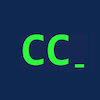

|  | GD Goenka University Coders Club |
The workshop is designed to introduce students to the world of open source and how git perfectly fits into the picture.
Aim:
What we'll cover:
Workshop Details:
Facilitator:
Swarup Ghosh
snwg@live.com, +91 89615 17827
Workshop presentation available here.
This workshop is recommended for those who are interested in practical software development
and open source contributions. Request you to carry your laptops for attending the workshop. Also, make sure that git is installed.
For registration please contact,
Rahul Shyokand
+91 88005 81956